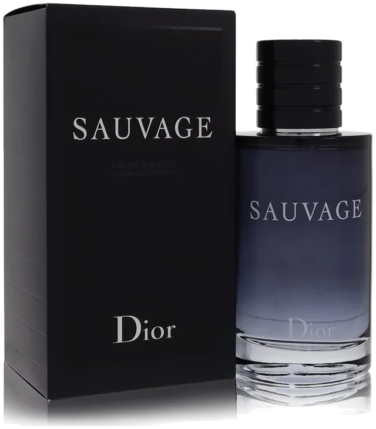

Sauvage EDPAdd · ₱6,200
Sauvage EDPAdd · ₱6,2001
Product page · ShoppingSticky buy bar
When the Add to bag button scrolls out of view on a product page, a slim bar slides up with the bottle, name, size and Add. Fewer scrolls back up to buy.
Ideas to make Sangyo feel more premium and easier to shop, each with a small live sketch. Tags say where it applies. Nothing here is built into the theme yet; pick the ones you like and each has a ready-to-run Codex task in docs/prompts/design-ideas.md.
Sauvage EDPAdd · ₱6,200When the Add to bag button scrolls out of view on a product page, a slim bar slides up with the bottle, name, size and Add. Fewer scrolls back up to buy.
Fresh = lemon yellow, spicy = cinnamon, sweet = vanilla cream, woody = sage… used on tiles, chips, collection headers and product backgrounds, so colour itself tells people what a perfume smells like.
Hover or tap a note chip to get one plain sentence about it (from the note metaobject). Teaches beginners; fits "smell it before you buy it".
A very light grain over the paper and sand backgrounds (one tiny SVG, no image download) makes flat colour feel like printed stock: warmer, more luxurious.
We find the  note you love, then the perfume that has it
note you love, then the perfume that has it
NOHO's quote section: one large centred sentence with small pictures dropped into the text, lines revealing as you scroll. A strong "about us" moment between sections.
NOHO's "Chairs that care" cards: three or four calm, numbered promises. Only claims that are true for your store.


A horizontal row of product cards you drag or swipe, with a thin progress line under it (NOHO's gallery). Shows more products without a long page.
Simple horizontal bars for the scent profile (citrus, woody, spicy…), labelled with their source (brand, community or your own wear test). Never invented; empty shows "not assessed yet".

Product cards show the bottle, and the bottle with its box when hovered. Feels like picking it up in a store.
The hero's dot cursor on all product cards and carousels, saying "View" on cards and "Drag" on carousels. Mouse only; touch keeps normal behaviour.
When moving between pages, a quick charcoal wipe (the preloader's colour) covers and lifts. Makes the site feel like one continuous experience. Short, and off with reduced motion.
Perfume is a top gift. A gift-wrap + note toggle next to Add to bag (as a cart line attribute or a gift-wrap product). Price is an example.
+Suggest perfumes that share notes (e.g. both have lavender), chosen from the same notes data. Helps people discover, and raises order value honestly.
"smells like a fresh shirt on a hot day"
Example quote · real reviews onlyShow one short line from a real customer review in the script font. Personal and on-brand. Only verified reviews from your review app.
A slow ribbon of note names in large italic between sections or above the footer (with a pause control). Sets the "notes first" tone.
Curated tabs like "Summer heat", "Rainy season", "Night out", built from your season and occasion fields. Very relevant locally.
Shop, Notes, Search and Bag always in reach at the bottom of the screen. Most of your visitors in the Philippines will be on phones.
A small floating button that opens the scent quiz from anywhere; hides on scroll down, returns on scroll up; never covers Add to bag.
Prices and counters in the display serif with aligned (tabular) digits, and a small "PHP" mark: looks more boutique than default sans prices.
One section in near-black for night and oud perfumes, the light palette inverted. Adds drama and rhythm to an otherwise light page.